“About Me” pages have a unique way of engaging and informing your visitors. This is because they do so in a more personal manner. And, unlike other pages, this page speaks volumes about the whole blog itself as well as the blogger who runs it. This is why it’s not surprising for experienced bloggers to take their time in making their “About Me” pages. Female bloggers, for one, have a reputation for paying close attention to minor details when it comes to their blogs, most especially, their “About Me” pages. To prove this point, listed below are awesome about me examples by female bloggers. You can use these to help you get started to create an engaging about page.


